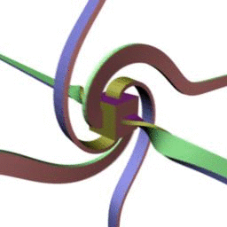

-
2019/01/15
Deleuze Notes: The 3 Syntheses -
2019/01/09
Deleuze Notes: Body Without Organs -
 2018/12/23
2018/12/23
Deleuze Notes: Desiring Production, Desiring Machines, Coding and Decoding of Fluxes -
2018/06/04
The Mercator Projection -
2018/05/03
Dolly Zoom using Möbius Transforms -
2017/10/21
3-Sphere notes -
2017/10/19
Intuition for Semi-Direct Products -

2017/09/26
Intuitions for SU(2) and SO(3) -
 2017/04/25
2017/04/25
Tetrahedral symmetry -
2017/03/21
Congruence Group Γ(2) -
2017/03/18
Ford Circles and Farey Graphs -
 2017/03/05
2017/03/05
Tessellation of the Hyperbolic Plane on the Riemann Sphere -
2017/02/23
Crib Sheet on Mathematical Groups -
 2016/09/12
2016/09/12
Möbius Transformations on Spherical Photos and Videos -
2016/08/27
Thought Bubbles -
2016/05/30
Torus Knots -
2015/01/17
Rotations, Transformations – Geometries and Meshes -
 2014/12/27
2014/12/27
Drawing Pentatope Cross-Sections in three.js -
2014/06/18
The Visual Representation of High Dimension Spaces -
2014/04/28
Face Field Update -
 2014/02/02
2014/02/02
Formula Toy -
2013/10/18
The Hairy Blob, 800 Ping Pong Balls, and a Mindstorms RoboCam -
2013/10/05
Anti-Face Model Specification and Calculation Details -
2013/05/19
Visualizing Factors and Prime Factorization -
2013/05/19
Factor Dominoes -
2013/05/07
Constrain Face Detection for Better Face Recognition -
2013/04/28
Face Recognition Design Considerations